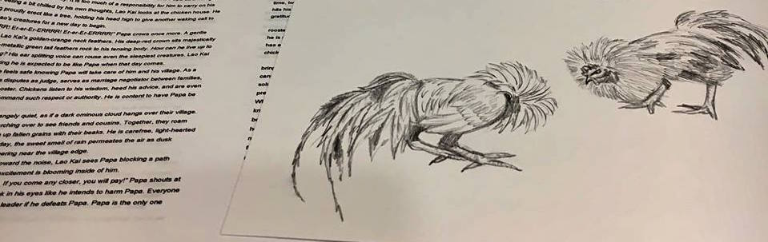
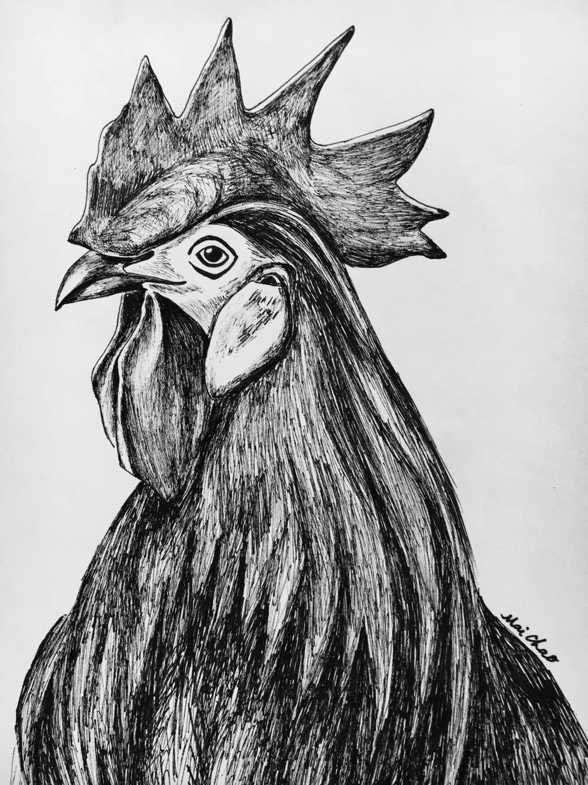

Writing
Samples of Upcoming Works: Brave Rooster
 Chapter 1
“Er-er-Er-ERRRR! Er-er-Er-ERRRR! Er-er-Er-ERRRR!” The distinct crow of a powerful rooster breaks through the stillness in a village. A sliver of moon peeks through thin clouds above Lao Kai’s crown when he jumps awake from a sudden disturbance. The morning air is crisp, clean, and refreshing high in the mountains. His needle-sharp talons grasp firmly onto an old tree stump as the onset of morning approaches. Upon hearing Papa’s daily morning crows, Lao Kai feels a deep happiness and reassurance knowing the familiarity of life in his village. For a second, he sees himself like Papa as a Village Rooster, but the idea disappears quickly. It is too much of a responsibility for him to carry on his young shoulders. Feeling a bit chilled by his own thoughts, Lao Kai looks at the chicken house. He sees Papa standing proudly erect like a tree, holding his head high to give another waking call to villagers and Yer Shao’s creatures for a new day to begin.
Read moreIllustrations:
Poetry
Filter by:
MO
Mo,
who is Mo?
Perhaps a brunette
or
a blond,
who loves to run.
Mo,
on the front of a white letter jacket,
fits crisp against my black ponytail.
Monogramed Mo,
track shoe wings, yellow timberwolf,
traces of another girl.
Mo,
her kind mother
gives a piece of Mo to me.
A daughter from another mother,
who wants to run like her Mo.
Running season is over,
proudly I wear Mo.
Watching frozen ice on the Mississippi
with a boy,
I see silhouettes of Mo
walking towards me.
My hand covers monogramed Mo.
Black hair girl cannot be Mo.
Feeling embarrassed for wearing Mo,
I hide behind the boy as
shadows pass by.
My shame evaporates,
slowly.
Mo and I,
two daughters loved by
a mom, teacher, believer.
The white letter jacket,
our shared casing,
one day
metamorphosizing into butterflies.
Still,
the frozen ice on
the Mississippi
stirs a deep longing of when.
When
will I be my own Mo?
Mo,
who is Mo?
Me,
who am I?
Copyright @ Mai Chao, 2/24/2017
Culture
Culture was once hazy like a darkening sky on the western front,
thin ominous clouds passing over.
Now,
I stand at an intersection
of the past and the present,
heart racing to find meaning,
purpose,
a place to belong.
Bit by bit,
I flourish,
springing up from the hard-packed earth.
Sheltered life breaks free,
a quiet girl grows wings with hopes and dreams.
My mother tongue rusty with neglect.
Language
speaks to the fibers bury generations deep within me.
I am meant
to make my world kinder,
to continue culture.
I build a home within myself,
not without loving hands,
blood,
tears of those who came before.
I remember comfort.
Mother’s sweet rice with green mustard,
Father’s fried fish and sticky rice,
the intoxication of delightful smells
enveloping every wall with familiarity.
I see contentment in
wearing white pleated skirt,
black velvet jacket,
rooster crown hat,
French coins dancing blithely during
New Year celebrations.
Coming full circle
by having my children,
I acknowledge culture.
Being together without having to explain,
a silent gift for who we are as mortals.
Culture,
rich like words,
scrumptious like nourishment,
bold like garments,
withstanding the test of time.
Yet,
I had to learn to receive these
lasting ancestral gifts.
Today,
culture
is no longer hazy,
but like sunshine blooming upon the eastern horizon.
Copyright @ Mai Chao, 2/24/2017